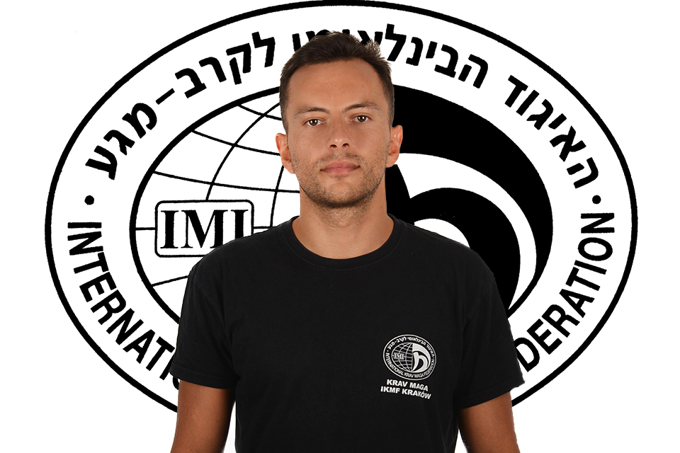
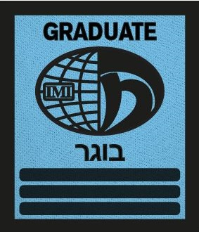

Jakub Pachołek
Asystent Instruktora | Stopień G3
Jakub Pachołek - Trenuje Krav Maga od roku 2017. Specjalizuje się w budowaniu silnych fundamentów. Jego nauczanie skupia się na świadomym opanowaniu podstaw, które są kluczem do zaawansowanych technik.
- Instruktor Sportu - Specjalność: Samoobrona (Uprawnienia polskie)
- Adaptive Instructor Course (Uprawnienia międzynarodowe) - Adaptacja technik Krav Maga pod kątem urazów w trakcie obrony lub osób niepełnosprawnych
- Instruktor Pałki teleskopowej (Uprawnienia polskie)
- Ratownik pola walki - kurs TCCC
- Kurs strzelecki - Pistolet podstawowy (Szkolenia GROM - POL SOF Academy)
Dyplomy i Certyfikaty